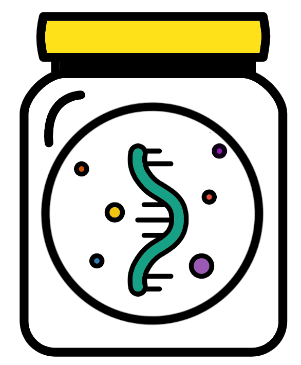
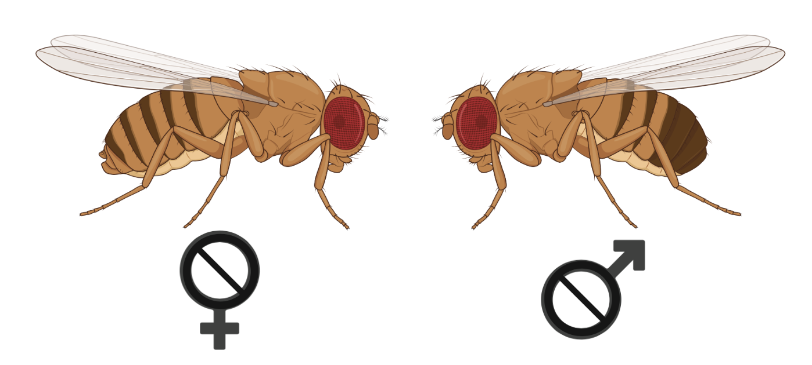

RNA-seq gene expression and pathway analysis - supplemental material
2023-09-20

Chapter 1 Introduction
This bookdown is supplemental to the main one. It contains some additional code and examples of tools that may prove useful in addition to the core RNA-Seq pipeline.
Ensure you have the rnaseq environment activated for using all of these materials. As a reminder, the command to do this is:
Table of contents
| Introduction to R | Making a count table from HTSeq output |

|

|
| Further analysis with DESeq2 | Processing multiple samples using loops |
|  |

|

This work is licensed under a Creative Commons Attribution-NonCommercial-ShareAlike 4.0 International License.